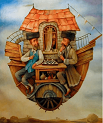
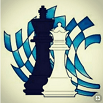

|
|
Giocatore |
Punteggio |
Risultati |
Time-out |
|
Gironi |
#1 Assoluto | | | 114.17 | 75 W /13 L /17 D | | | 5 - 18 - 26 - 32 - 35 - 37 - 40 - 42 - 45 - 48 - 51 |
#2 Assoluto | | | 111.74 | 77 W /55 L /13 D | | | 7 - 12 - 14 - 18 - 25 - 28 - 31 - 34 - 37 - 40 - 42 - 44 - 48 - 49 - 51 |
#3 Assoluto | |  | | (1836) |
| 85.88 | 61 W /22 L /5 D | | | 7 - 13 - 25 - 31 - 37 - 41 - 43 - 46 - 48 |
#4 Assoluto | |  | | (2073) |
| 84.68 | 63 W /2 L /2 D | | | 2 - 21 - 28 - 36 - 44 - 47 - 50 |
#5 Assoluto | |  | | (1709) |
| 63.42 | 43 W /36 L /6 D | | | 11 - 13 - 33 - 34 - 38 - 40 - 42 - 45 - 49 |
#1 U1600 | |  | | (1418) |
| 50.01 | 29 W /29 L /1 D | | | 7 - 16 - 17 - 30 - 36 - 51 |
| #7 | | | 45.16 | 31 W /6 L /8 D | | | 6 - 14 - 27 - 29 - 45 |
#2 U1600 | | | 45.10 | 34 W /43 L /3 D | | | 24 - 29 - 33 - 38 - 40 - 43 - 46 - 49 |
| #9 | | | 41.20 | 29 W /8 L /2 D | | | 18 - 34 - 43 - 48 |
| #10 | |  | | (1635) |
| 38.64 | 29 W /18 L /1 D | | | 27 - 35 - 43 - 47 - 49 |

#3 U1600 | | | 37.25 | 27 W /49 L /2 D | | | 7 - 14 - 21 - 28 - 32 - 39 - 46 - 50 |
| #12 | | | 36.04 | 23 W /2 L /5 D | | | 17 - 26 - 45 |
| #13 | | | | | (1753) |
| 34.11 | 23 W /2 L /3 D | | | 4 - 29 - 39 |
| #14 | | | | | (1806) |
| 31.24 | 22 W /5 L /3 D | | | 3 - 12 - 18 |
| #15 | | | 24.85 | 17 W /0 L /3 D | | | 1 - 20 |
#16
#4 U1600 | | | 23.84 | 16 W /28 L /3 D | | | 3 - 12 - 32 - 38 - 46 |
| #17 | | | 23.38 | 15 W /11 L /3 D | | | 4 - 38 - 50 |
#18
#5 U1600 | | | | | (1483) |
| 23.27 | 20 W /57 L /1 D | | | 17 - 30 - 33 - 34 - 42 - 43 - 44 - 51 |
| #19 | | | 23.13 | 17 W /3 L /0 D | | | 39 - 51 |
| #20 | | | 22.19 | 17 W /1 L /0 D | | | 16 - 29 |

#1 U1300 | | | | | (1284) |
| 20.54 | 16 W /58 L /0 D | | | 11 - 24 - 31 - 39 - 40 - 41 - 43 - 47 |
| #22 | | | 18.94 | 14 W /2 L /3 D | | | 6 - 13 |
| #23 | | | | | (1602) |
| 18.79 | 17 W /2 L /1 D | | | 24 - 32 |
| #24 | | | 18.58 | 13 W /6 L /1 D | | | 31 - 39 |
| #25 | | | 17.84 | 11 W /6 L /3 D | | | 1 - 25 |
| #26 | | | 17.07 | 14 W /5 L /1 D | | | 2 - 30 |
#27
#6 U1600 | | | | | (1574) |
| 16.62 | 16 W /10 L /1 D | | | 24 - 33 - 41 |
| #28 | | | 16.23 | 13 W /6 L /0 D | | | 3 - 27 |
#29
#7 U1600 | | | 13.90 | 9 W /8 L /2 D | | | 2 - 19 |
#30
#8 U1600 | | | 13.79 | 10 W /26 L /2 D | | | 6 - 17 - 26 - 45 |
| #31 | | | 13.68 | 9 W /0 L /1 D | | | 25 |
| #32 | | | 13.11 | 9 W /0 L /1 D | | | 8 |
| #33 | | | | | (2123) |
| 12.80 | 10 W /0 L /0 D | | | 44 |
| #34 | | | 12.15 | 8 W /1 L /1 D | | | 46 |
| #35 | | | 12.15 | 9 W /1 L /0 D | | | 19 |
#36
#9 U1600 | | | 12.11 | 9 W /10 L /0 D | | | 16 - 48 |
| #37 | | | 11.63 | 7 W /2 L /1 D | | | 49 |
| #38 | | | 11.28 | 7 W /1 L /2 D | | | 1 |
| #39 | | | 11.20 | 7 W /1 L /2 D | | | 31 |
| #40 | | | 11.12 | 8 W /2 L /0 D | | | 38 |
| #41 | | | 10.85 | 6 W /2 L /2 D | | | 49 |
#42
#10 U1600 | |  | | (1502) |
| 10.64 | 7 W /5 L /0 D | | | 36 |
#43
#11 U1600 | | | | | (1492) |
| 10.64 | 6 W /2 L /2 D | | | 36 |
#44
#12 U1600 | |  | | (1552) |
| 10.57 | 7 W /2 L /1 D | | | 14 |
#45
#13 U1600 | | | 10.53 | 4 W /9 L /6 D | | | 45 - 50 |
#46
#14 U1600 | | | 10.20 | 7 W /2 L /1 D | | | 3 |
| #47 | | | 10.12 | 8 W /1 L /1 D | | | 9 |
| #48 | | | 10.03 | 10 W /9 L /1 D | | | 5 - 30 |
#49
#15 U1600 | | | 9.94 | 7 W /2 L /0 D | | | 22 |
| #49 | | | | | (1609) |
| 9.94 | 7 W /3 L /0 D | | | 22 |
#50
#16 U1600 | | | 9.60 | 8 W /10 L /0 D | | | 39 - 41 |
| #51 | | | 9.49 | 5 W /1 L /3 D | | | 26 |
#52
#17 U1600 | | | 9.29 | 6 W /3 L /1 D | | | 46 |
| #53 | | | | | (1688) |
| 9.06 | 6 W /4 L /0 D | | | 2 |
#54
#18 U1600 | | | 8.96 | 7 W /10 L /1 D | | | 16 - 29 |
#55
#19 U1600 | | | 8.94 | 6 W /13 L /1 D | | | 2 - 19 |
| #56 | | | 8.48 | 8 W /2 L /0 D | | | 23 |
#57
#20 U1600 | | | 8.38 | 6 W /13 L /0 D | | | 35 - 38 |
| #58 | | | | | (1651) |
| 8.32 | 5 W /2 L /3 D | | | 20 |
| #59 | | | 8.22 | 6 W /4 L /0 D | | | 4 |
#60
#21 U1600 | | | 8.10 | 7 W /3 L /0 D | | | 9 |
| #61 | | | | | (1718) |
| 7.75 | 5 W /4 L /1 D | | | 14 |
| #62 | | | 7.68 | 6 W /4 L /0 D | | | 20 |
#63
#22 U1600 | | | 7.42 | 5 W /4 L /1 D | | | 9 |
| #64 | | | 7.35 | 7 W /0 L /0 D | | | 15 |
| #65 | | | 7.25 | 5 W /4 L /0 D | | | 42 |
#2 U1300 | | | 6.77 | 6 W /14 L /0 D | | | 4 - 9 |
| #67 | | | 6.40 | 5 W /5 L /0 D | | | 44 |
#68
#23 U1600 | | | 6.30 | 5 W /4 L /0 D | | | 37 |
| #69 | | | 6.25 | 3 W /2 L /3 D | | | 13 |
#70
#24 U1600 | | | 6.20 | 5 W /5 L /0 D | | | 7 |
| #71 | | | 6.04 | 4 W /6 L /0 D | | | 2 |
| #72 | |  | | (1644) |
| 5.96 | 3 W /5 L /2 D | | | 50 |
#73
#25 U1600 | | | 5.90 | 5 W /5 L /0 D | | | 5 |
#74
#26 U1600 | | | 5.83 | 5 W /3 L /1 D | | | 23 |
#75
#27 U1600 | | | 5.77 | 5 W /2 L /1 D | | | 15 |
#76
#28 U1600 | | | 5.68 | 4 W /5 L /0 D | | | 22 |
#77
#29 U1600 | | | 5.60 | 4 W /6 L /0 D | | | 32 |
#78
#30 U1600 | | | 5.52 | 4 W /5 L /0 D | | | 8 |

#3 U1300 | | | | | (1260) |
| 5.37 | 4 W /15 L /0 D | | | 12 - 51 |
#80
#31 U1600 | | | 5.30 | 5 W /4 L /0 D | | | 23 |
#81
#32 U1600 | | | 5.26 | 4 W /2 L /1 D | | | 10 |
#82
#4 U1300 | | | 5.24 | 4 W /16 L /0 D | | | 33 - 35 |
#83
#5 U1300 | | | 5.12 | 4 W /6 L /0 D | | | 21 |
#84
#33 U1600 | | | 4.97 | 3 W /6 L /1 D | | | 22 |
#85
#6 U1300 | | | 4.72 | 4 W /6 L /0 D | | | 5 |
#86
#34 U1600 | | | 4.48 | 3 W /6 L /1 D | | | 20 |
#86
#34 U1600 | |  | | (1408) |
| 4.48 | 3 W /6 L /1 D | | | 20 |
| #87 | | | 4.47 | 2 W /5 L /2 D | | | 50 |
#88
#35 U1600 | | | 4.24 | 4 W /5 L /0 D | | | 23 |
#89
#36 U1600 | | | 4.23 | 3 W /6 L /1 D | | | 34 |
#90
#37 U1600 | | | 4.23 | 3 W /7 L /0 D | | | 1 |
#91
#38 U1600 | |  | | (1484) |
| 4.23 | 2 W /6 L /2 D | | | 1 |
#92
#39 U1600 | | | 4.20 | 3 W /3 L /2 D | | | 15 |
| #93 | | | 4.13 | 3 W /6 L /1 D | | | 5 |
#94
#40 U1600 | | | 4.11 | 3 W /7 L /0 D | | | 4 |
#94
#40 U1600 | | | 4.11 | 3 W /7 L /0 D | | | 4 |
#95
#7 U1300 | | | 4.03 | 3 W /5 L /1 D | | | 16 |
#96
#8 U1300 | | | | | (1156) |
| 3.78 | 2 W /6 L /2 D | | | 12 |
#97
#41 U1600 | | | 3.71 | 3 W /5 L /1 D | | | 23 |
#98
#9 U1300 | | | 3.69 | 3 W /5 L /0 D | | | 28 |
#99
#10 U1300 | | | 3.67 | 3 W /5 L /1 D | | | 15 |
#100
#11 U1300 | | | 3.60 | 3 W /7 L /0 D | | | 17 |
| #101 | | | 3.51 | 3 W /3 L /0 D | | | 10 |
#102
#42 U1600 | | | | | (1386) |
| 3.47 | 2 W /7 L /1 D | | | 18 |
#103
#43 U1600 | | | 2.92 | 2 W /6 L /0 D | | | 26 |
| #104 | | | | | (1765) |
| 2.90 | 2 W /2 L /0 D | | | 42 |
#105
#12 U1300 | | | | | (1130) |
| 2.88 | 2 W /8 L /0 D | | | 25 |
#106
#44 U1600 | | | | | (1489) |
| 2.82 | 2 W /8 L /0 D | | | 1 |
#107
#13 U1300 | | | | | (1201) |
| 2.80 | 2 W /8 L /0 D | | | 35 |
#108
#45 U1600 | | | 2.78 | 3 W /5 L /0 D | | | 47 |
#109
#46 U1600 | | | 2.78 | 1 W /5 L /2 D | | | 13 |
#110
#47 U1600 | | | 2.76 | 2 W /8 L /0 D | | | 8 |
#111
#14 U1300 | | | 2.72 | 2 W /8 L /0 D | | | 3 |
#112
#48 U1600 | | | 2.70 | 2 W /6 L /0 D | | | 19 |
#112
#48 U1600 | | | | | (1349) |
| 2.70 | 2 W /5 L /0 D | | | 19 |
#113
#49 U1600 | | | 2.68 | 2 W /8 L /0 D | | | 40 |
#114
#15 U1300 | | | | | (1131) |
| 2.40 | 3 W /6 L /0 D | | | 24 |
#115
#50 U1600 | | | | | (1397) |
| 2.34 | 2 W /3 L /0 D | | | 10 |
#116
#16 U1300 | | | 2.14 | 2 W /6 L /0 D | | | 27 |
#117
#51 U1600 | | | 1.81 | 1 W /8 L /1 D | | | 34 |
#118
#52 U1600 | | | 1.59 | 0 W /8 L /2 D | | | 48 |
#119
#17 U1300 | |  | | (1272) |
| 1.46 | 1 W /8 L /0 D | | | 26 |
| #120 | | | 1.39 | 2 W /7 L /0 D | | | 47 |
#121
#53 U1600 | | | 1.28 | 1 W /9 L /0 D | | | 20 |
#122
#18 U1300 | | | 1.26 | 1 W /8 L /0 D | | | 37 |
#123
#19 U1300 | | | 1.24 | 1 W /9 L /0 D | | | 7 |
#124
#54 U1600 | | | 1.10 | 1 W /9 L /0 D | | | 6 |
#124
#54 U1600 | | | 1.10 | 1 W /9 L /0 D | | | 6 |
#125
#20 U1300 | | | 1.07 | 1 W /6 L /0 D | | | 27 |
#126
#55 U1600 | | | 1.05 | 1 W /6 L /0 D | | | 41 |
#127
#56 U1600 | | | 0.69 | 0 W /9 L /1 D | | | 18 |
#128
#21 U1300 | | | 0.00 | 0 W /10 L /0 D | | | 44 |
#128
#21 U1300 | |  | | (1153) |
| 0.00 | 0 W /10 L /0 D | | | 3 |
#128
#21 U1300 | | | 0.00 | 0 W /10 L /0 D | | | 5 |
#128
#21 U1300 | | | 0.00 | 0 W /10 L /0 D | | | 14 |
#128
#57 U1600 | | | | | (1459) |
| 0.00 | 0 W /5 L /0 D | | | 15 |
#128
#21 U1300 | | | | | (964) |
| 0.00 | 0 W /5 L /0 D | | | 16 |
#128
#21 U1300 | | | | | (751) |
| 0.00 | 0 W /6 L /0 D | | | 23 |
#128
#21 U1300 | | | 0.00 | 0 W /6 L /0 D | | | 24 |
#128
#57 U1600 | | | 0.00 | 0 W /10 L /0 D | | | 31 |
#128
#57 U1600 | | | 0.00 | 0 W /6 L /0 D | | | 37 |
#128
#21 U1300 | | | | | (800) |
| 0.00 | 0 W /0 L /0 D | | | 41 |